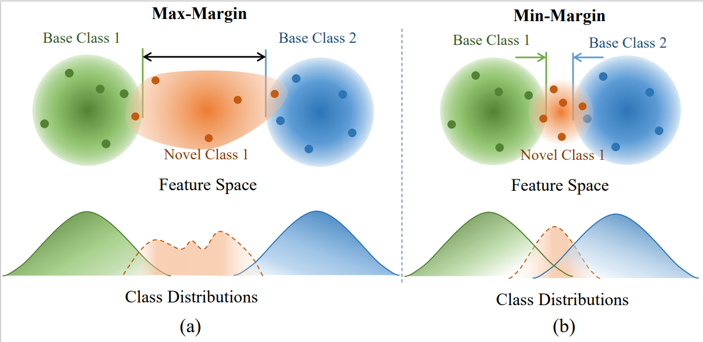

Feng LiuPh.D. candidateRoom 260, Academy 2 Building
|

|
Biography
I am a Ph.D. candidate in LAMP (Learning And Machine Perception) in the University of Chinese Academy of Sciences , advised by Prof. Fang Wan. I earned a B.E. from the Harbin Institute of Technology, Shenzhen in June 2020.
My research interests include Object Detection, Representation Learning and Multimodal Large Language Model.
Publications
 |
Feng Liu*, Xiaosong Zhang*, Zhiliang Peng, Zonghao Guo, Fang Wan, Xiangyang Ji, Qixiang Ye,
Integrally Migrating Pre-trained Transformer Encoder-decoders for Visual Object Detection" 2023 IEEE/CVF International Conference on Computer Vision (ICCV 2023) [Paper] [Code] |
| Feng Liu, Xiaosong Zhang, Fang Wan, Xiangyang Ji, Qixiang Ye
Domain Contrast for Domain Adaptive Object Detection 2021 IEEE Transactions on Circuits and Systems for Video Technology (T-CSVT 2021) [Paper] [Code] |
|
|  | Bohao Li*, Boyu Yang*, Chang Liu, Feng Liu, Rongrong Ji, Qixiang Ye
Beyond Max-Margin: Class Margin Equilibrium for Few-shot Object Detection 2021 IEEE/CVF Conference on Computer Vision and Pattern Recognition (CVPR 2021) [Paper] [Code] |